Mfano wa kwanzaMzingo wa mrabaMzingo wa mraba ni jumla ya urefu wa pande zake zote nne. Pande zote za mraba zina urefu sawa, mzingo wa mraba unapatikana kwa kujumlisha urefu wa pande zake zote. Pia, mzingo wa mraba unapatikana kwa kuzidisha upande mmoja kwa 4. Hivyo, =+++mzingo wa mrabaurefuurefuurefuurefu=×4urefuKwa hiyo, mzingo wa mraba =×4urefu.Tafuta mzingo wa mraba ufuatao.sm 20Njia =+++Mzingo wa mrabaupandeupandeupandeupande=+++Mzingo wa mrabasm 20sm 20sm 20sm 20=Mzingosm 80Au Mraba una pande nne zenye urefu unaolingana.=×Mzingo wa mrabaupande mmoja4=×Mzingo wa mrabasm 204= sm 80 Kwa hiyo, mzingo wa mraba ni sm 80.